Многие вещества среди тех, что находятся в окружающем воздухе, нежелательны в дыхательных путях, и организм реагирует неприятными симптомами, которые мы называем аллергией. Схватка, которая начинается, когда с воздухом в организм проникает аллерген, похожа на сражение, подробно описанное в статье о пищевых аллергиях. Чихание, хрипы, капающие выделения и зуд – вот неприятности, которыми чревата жизнь страдающего аллергией ребенка. Хорошая новость в том, что родители могут помочь.
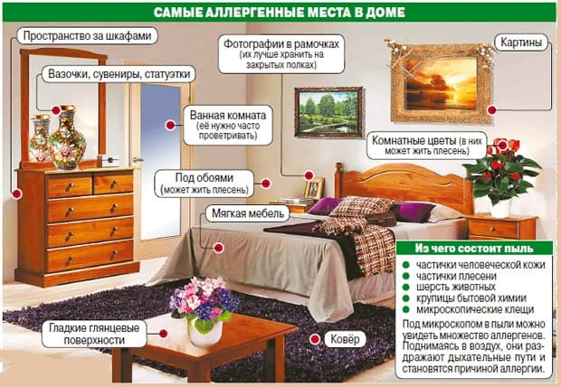
Все обычные признаки аллергий перечислены ранее. Дыхательные аллергии обычно носят сезонный характер, и самыми частыми симптомами, которые могут появиться у вашего ребенка, являются следующие:
• прозрачные жидкие выделения из носа и слезящиеся глаза;
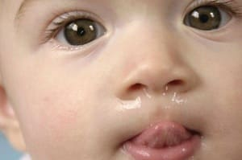
• приступы чихания один за другим;
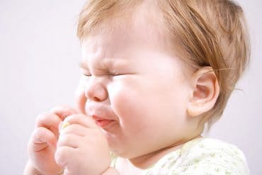
• постоянное фырканье;
• кровотечение из носа;
• углубление на кончике носа от частого трения (называемого аллергическим салютом);
• темные круги под глазами (аллергические фонари);
• частые острые респираторные заболевания и/или отиты;

• кашель ночью и заложенный нос утром;
• шумное дыхание ночью;
• кашель при физической активности;
• неизлечимый кашель, зачастую сопровождающийся дребезжащими звуками или хрипами.
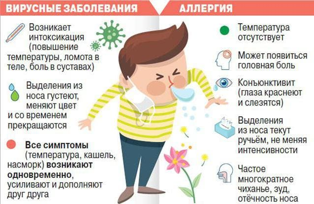
Аллергия это или простуда? В обоих случаях из маленьких носиков течет, а маленькая грудка разрывается от кашля. Но если вам требуется решить, может ли ребенок посещать детский сад, см. «ОРЗ или аллергия?». Если по первым симптомам вы не можете определить простуда это или аллергия, то вам просто нужно выждать какое-то время. Если симптомы сохраняются в течение нескольких недель, то, скорее всего, это аллергия. Не обязательно видеть различия между двумя этими состояниями, поскольку лечение, направленное на облегчение симптомов, совпадает в обоих случаях.
Сначала решите, насколько большую проблему составляет аллергия вашего ребенка. Может быть, это не больше чем досадный шум, от которого избавит время и гора носовых платков? Или же аллергия препятствует нормальному росту, развитию и жизнедеятельности ребенка? Будучи личным детективом своего ребенка, постарайтесь установить наиболее вероятные аллергены, которые включают аллергическую реакцию. Вот четыре основные категории назальных аллергенов и методы борьбы с ними.
Пыльца. Обратите внимание на этот аллерген, если аллергия вашего ребенка носит сезонный характер, то есть начинается, когда в воздухе имеется большое содержание пыльцы, в ветреные дни и когда у ваших страдающих аллергией знакомых тоже течет из носа и начинается чихание. Если подозрение падает на пыльцу, заносимую в дом извне, попробуйте следующее:
• В ветреные дни, в месяцы, когда у растений образуется пыльца, держите ребенка дома.
• Избегайте мест, где пыльца и другие аллергены имеются в наибольшем количестве, к примеру, лугов с цветущими травами и цветами.
• Держите окна закрытыми, хотя бы в комнате, где спит ребенок.
• Чтобы удалить пыльцу, перед сном купайте ребенка и мойте ему волосы; стирайте белье, чтобы смыть пыльцу.
• Подумайте о приобретении кондиционера для воздуха и системы фильтрации воздуха для комнаты ребенка или для всего дома, если аллергия тяжелая.
• Не вывешивайте постельное белье или одежду на улице: они становятся сборщиками пыльцы.
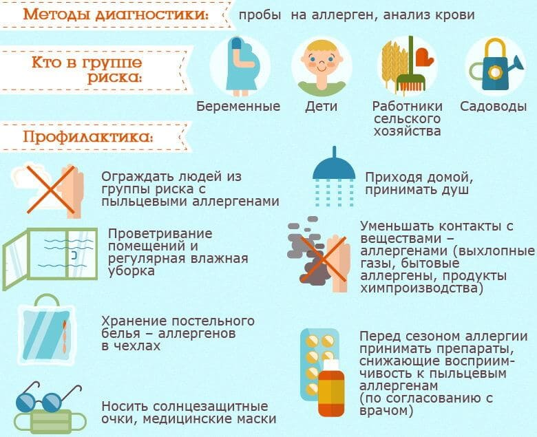
Совет для детектива
Если вы подозреваете, что у вашего ребенка есть аллергия на что-то в его окружении, но вы не уверены, устройте себе отпуск и отправьтесь куда-нибудь. Если обычные симптомы аллергии вашего ребенка исчезнут или изменятся, вы можете быть уверены на все сто, что у него аллергия на что-то в доме.
Перхоть животных. Затем следует заподозрить домашнюю кошку, собаку, птичку или соседских питомцев. Возможно, ваш ребенок чихает, у него начинает течь из носа или появляются хрипы, когда он играет с животным? Если подозрение падает на собаку, то следует выгнать ее на улицу, или хотя бы не пускать собаку в комнату, где спит ребенок. Хотя вы можете думать, что аллергию вызывает шерсть животных, на самом деле ее вызывает перхоть (осыпающиеся с кожи чешуйки). Чаще всего ребенок может играть с вызывающим аллергию животным на улице без проявлений аллергии, но начинает чихать, как только парочка затевает игру в стенах дома. Опять же, насколько строго нужно изолировать собаку от ребенка, зависит от того, насколько сильно аллергия беспокоит малыша. Если в вашей семье много случаев аллергии или у ребенка есть другая аллергия, имеет смысл, прежде чем приобрести животное, дать ребенку и потенциальному питомцу побыть вместе в помещении для теста на аллергию. Все собаки и кошки потенциально аллергенны, но некоторые породы, по всей видимости, больше, чем другие. Если ваша семья сильно страдает от аллергии, подумайте, не купить ли вам золотую рыбку.
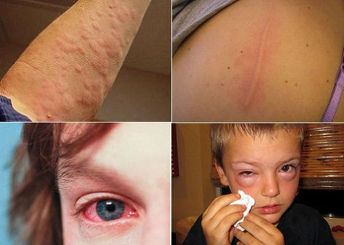
Плесень. Размножающиеся спорами растения, которые живут в темных, прохладных, сырых местах, называются плесенью. Плесень можно обнаружить в погребе, в туалете, на чердаке, в кучах сваленной в углах одежды, в старых матрасах, подушках и одеялах, в корзинах, мокрых коврах, мусорных ведрах, на занавесках в душевой, на стойке душа, на плитке в ванной комнате (особенно в сырых углах) и на комнатных растениях. Часто остающийся без внимания источник плесени, заносимой в спальню, – это увлажнитель (см. «Увлажнители против испарителей».). На улице местами обитания плесени являются кучи влажного сена, листьев или поленницы.
Чтобы очистить от плесени место для сна и игр своего ребенка:
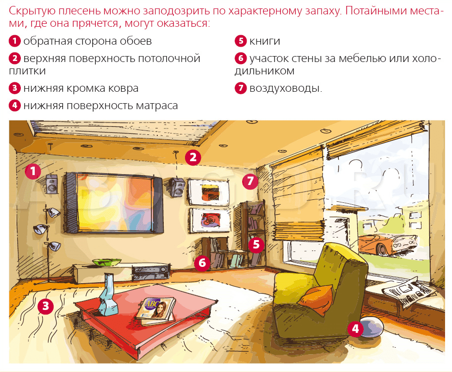
• проветрите и почистите все места обитания плесени, перечисленные выше. Используйте для чистки убивающее плесень дезинфицирующее средство, такое как хлорка (держите в местах, недоступных для детей);
• закройте окна, которые расположены рядом с кустарником, на котором растет плесень или который выбрасывает в воздух пыльцу. Кроме того, очистите двор от куч мусора и подстригите кустарники;
• снимите ковер и обдерите обои, намокшие от недавно протекшего потолка;
• если вы включаете увлажнитель все месяцы, что работает центральное отопление, скорее всего, плесень есть на шторах или обоях. В этом случае чаще стирайте шторы, а обои замените.
Одним из показателей того, что у вашего ребенка аллергия на плесень, является то, что симптомы наиболее сильно проявляются во влажную погоду (питательную среду для плесени). Агрессивность, с которой следует бороться с плесенью, зависит от степени тяжести аллергии ребенка. Большинство людей прекрасно соседствует с небольшим количеством плесени. Компании, занимающиеся проверкой помещений, могут проверить ваш дом на наличие плесени и установить, является ли это проблемой. Иногда бывает, что плесень разрослась настолько, что проще переехать, чем избавиться от нее. Тем не менее обычно компания может помочь вам в очистке дома от плесени до такой степени, чтобы она больше не угрожала вашему здоровью.
Как очистить спальню от аллергенов
Постель
• Покройте матрас, пружинный блок и подушку непроницаемыми для аллергенов чехлами на молнии.
• Избегайте подушек и одеял из пуха и пера. Откажитесь также от капока или пенорезины (в пенорезине, если она влажная, может расти плесень). Купите подушки и чехлы, изготовленные из полиэстера.
• Освободите место для сна ребенка от меха; уберите все пушистые и мягкие игрушки из кроватки ребенка и из спальни вообще, если аллергия у ребенка очень сильная. Положите их в мешок для мусора и унесите. Дайте ребенку такую игрушку, которую можно часто стирать. Замените шерстяные одеяла и пледы синтетическими или хлопчатобумажными и почаще стирайте их. Проветривайте матрас, пылесосьте его и стирайте наволочки и одеяла как минимум каждые две недели.
• Не сваливайте вещи под кровать на хранение.
• Отодвиньте кроватку ребенка или вашу кровать подальше от окна (если оно открыто) и подальше от вентиляционных отверстий.
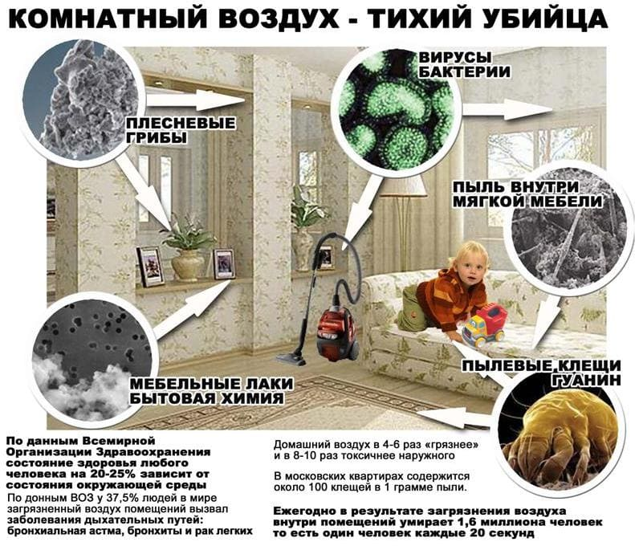
Мебель в спальне
• Замените обитые тканью стулья или мягкие кресла пластмассовыми или деревянными.
• Положите на деревянный или покрытый линолеумом пол половики и почаще стирайте их. Избегайте ковров с длинным ворсом.
• Не покупайте мебель с резными орнаментами, в которых скапливается пыль.
• Избегайте книг или книжных полок, которые являются главными сборщиками пыли.
• Не используйте спальню в качестве кладовки.
• Не сваливайте одежду кучами по всей комнате. Держите все вещи и другие предметы в гардеробах и шкафах, а дверцы гардеробов и шкафов держите закрытыми.
• Подъемные маркизы или жалюзи предпочтительнее, чем собирающие пыль шторы.
• Повесьте, пожалуйста, хлопчатобумажные занавески, которые легко стирать, а не тяжелые гобеленовые портьеры.
• Выясните, насколько аллергенны материалы, из которых изготовлена мебель. Слабым аллергеном являются древесно-стружечные плиты, при изготовлении которых применяется формальдегид. Уточните у изготовителя.
Вентиляция и очистка воздуха
• Держите дверь в спальню закрытой и не пускайте туда домашних животных.
• В сезон массового цветения держите окна закрытыми.
• В вентиляционные отверстия с тягой вставьте фильтры или затяните их марлей; лучше всего закрыть их и запечатать.
• Избегайте электрических вентиляторов: они собирают пыль и гоняют ее по комнате.
• Подумайте о приобретении воздушного фильтра. Лучше выбрать такой, который имеет маркировку НЕРА (high efficiency particulate accumulator; высокоэффективный сборщик микрочастиц), означающую, что он способен удалять из воздуха продукты жизнедеятельности клещей, пыльцу, плесень, споры, перхоть животных и многие раздражающие вещества, содержащиеся в сигаретном дыме и парах, или ионный (предпочтительно без озонового элемента).
Советы по проведению уборки
• Нельзя проводить уборку пылесосом, когда в комнате находится ребенок, поскольку пылесосы поднимают пыль. После проведения уборки пылесосом проветрите комнату. Лучше использовать пылесос с резервуаром и водным фильтром, чтобы часть пыли и клещей не могла вернуться обратно в помещение. Лучше купить пылесос с маркировкой НЕРА (high efficiency particulate accumulator; высокоэффективный сборщик микрочастиц), который втягивает и удерживает внутри невидимые пылевые аллергены.
• Влажная уборка лучше, чем сухая.
• Мойте пол с дезинфицирующим средством, убивающим плесень, таким как раствор хлорки.
• Выгоняйте курильщиков из дома.
• Берегитесь других аллергенов и раздражителей, которые могут быть в воздухе: кухонные запахи, дезодоранты, освежители воздуха, каминный дым, домашние растения, духи, детские присыпки, косметика, таблетки от моли и спреи от насекомых (репелленты, инсектициды, например от комаров).
Лишь в очень редких случаях родителям приходится идти на такие радикальные меры, чтобы очистить помещение от аллергенов. Но для детей, страдающих сильной аллергией, все вышеперечисленные мероприятия обязательны. Обратитесь к своему врачу или детскому аллергологу за дополнительными рекомендациями по выявлению аллергии у своего ребенка и способам ее профилактики.
Пыль. Аллергены, имеющиеся в пыли, появляются там из-за крошечных насекомых, известных как пылевые клещи. Эти существа похожи на микроскопические крошки и живут в пыли на коврах, в матрасах и подушках, а также в мягкой мебели. Они быстро размножаются в теплых влажных условиях и питаются чешуйками кожи, которые безостановочно осыпаются с людей. Экскременты этих клещей напоминают крошечные шарики, которые летают в воздухе и достигают дыхательных путей склонного к аллергии человека. Именно эти экскременты вызывают аллергию, а не пыль сама по себе или клещи как таковые. Но борьба с пылью помогает держать аллергены под контролем. Ковры можно обработать порошком «Acarosan», чтобы убить пылевых клещей и нейтрализовать их аллергенные выделения, а также чтобы их легче было удалить, когда вы будете пылесосить. Обратитесь по поводу этого нового продукта к своему аллергологу.
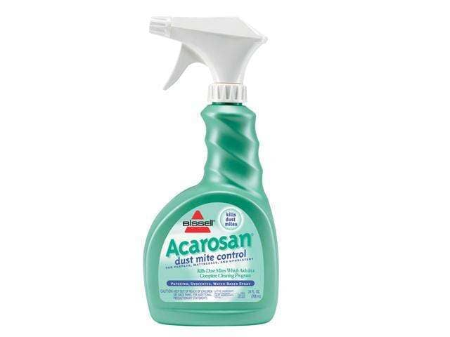
Сделать так, чтобы в доме не было ни пылинки, так же сложно, как добиться, чтобы нос всегда был чистым. Но есть способ свести количество пыли к минимуму и очистить помещения, в которых находится ваш ребенок, от пушистых сборщиков пыли. Опять же, ваша активность в борьбе с пылью должна быть пропорциональна тяжести аллергии у ребенка. Начните со спальни, если ваш ребенок по ночам издает при дыхании много звуков и просыпается с утра с заложенным носом.
Если в школе у вашего ребенка обостряются симптомы аллергии, обратите внимание на следующее:
• Нет ли тараканов в шкафчиках и других местах. Их экскременты могут вызывать аллергию.
• Есть ли в классной комнате животные. Иногда класс заводит себе любимца – песчанку, кролика или другого грызуна, – который может быть причиной появления симптомов аллергии. Попросите учителя пристроить животное к кому-нибудь из одноклассников на пару недель и посмотрите, изменится ли ситуация.
• Пылевые клещи и плесень. Поговорите с директором школы о том, как обнаружить и устранить возможные источники.
• Растения и трава. В школе может быть газонная трава или растения, с которыми ребенок больше нигде не встречается. К сожалению, это изменить крайне сложно.
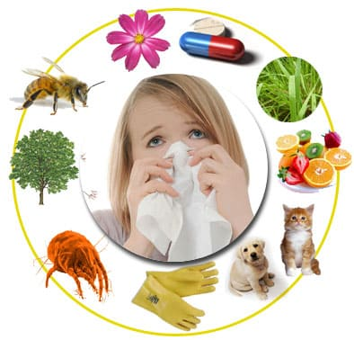
Если симптомы аллергии у ребенка не исчезли после того, как вы провели собственное расследование и устранили возможные причины, аллерголог может провести ряд кожных проб для установления причин аллергии. Это поможет сосредоточиться на профилактических мерах по устранению конкретных аллергенов вместо того, чтобы хвататься за все сразу. Вы также можете сдать анализ крови на аллергены.
Если симптомы аллергии у ребенка не исчезли после того, как вы провели собственное расследование и устранили возможные причины, аллерголог может провести ряд кожных проб для установления причин аллергии. Это поможет сосредоточиться на профилактических мерах по устранению конкретных аллергенов вместо того, чтобы хвататься за все сразу. Вы также можете сдать анализ крови на аллергены.
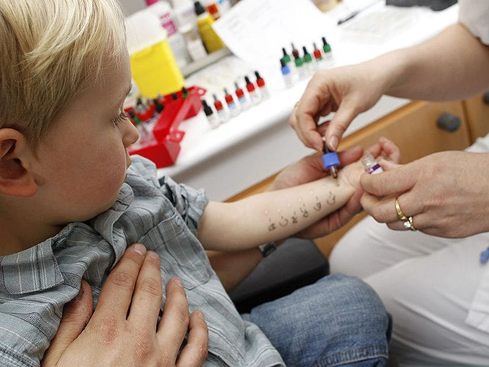
Противоотечные, антигистаминные препараты применяются больше у детей постарше и взрослых, но выпускаются также и для детей до года. Лучше использовать нефармацевтические средства: соблюдать гигиену носовой полости и способствовать оттоку выделений. В зависимости от тяжести аллергии у вашего ребенка ваш врач или аллерголог может посоветовать вам безопасную и эффективную медикаментозную терапию.
Если вы можете установить аллергены, вызывающие экзему, и избегать их, вы увидите у ребенка потрясающие улучшения.
Пищевая аллергия. Шесть самых распространенных аллергенов – это молочные продукты (молоко, йогурт, сыр, масло), яйца, соя, арахис, рыба и пшеничный глютен. Исключите эти продукты из рациона на две-три недели. Если вы заметите улучшение, вводите продукты по одному, чтобы определить, на какой именно у ребенка аллергия. Кормящие матери должны сделать то же самое со своей диетой, если у ребенка экзема. Если ребенок на искусственном вскармливании, попробуйте сменить смесь.

Аллергены в окружающей среде. Пыль, плесень, домашние животные и сезонные природные аллергены, такие как пыльца, скорее вызывают раздражение дыхательных путей и астму, а не экзему. Однако они могут сыграть роль дополнительных факторов.
Марта, Уильям, Роберт, Джеймс Сирс"Ваш малыш от рождения до двух лет"